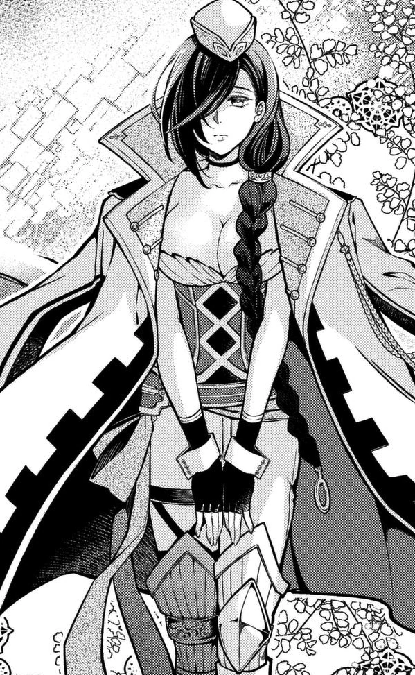

Dioses
Humanos
- Quin Shing Huang
- Sasaki Kojiro
- Raiden Tameemon
- Adan
- Simo Häyhä
- Souji Okita
- Lu Bü
- Jack
valquirias
- Randgrid
- Reginleifr
- Hrist
- Quin Shing Huang:Fue el fundador de la dinastía Qin y el primer emperador en unificar China. Su nombre real es Yin Zheng y está basado en el emperador con el mismo nombre. Se destaca por sus habilidades estrategias y control sobre las multitudes, ya que obligó a la población a trabajar en grandes proyectos como fue el caso de "la gran muralla china". A pesar de su tiranía se enfocó en el desarrollo económico en China. De igual manera, se mostró con un hombre muy precavido pues tenía varios dobles por si intentaban asesinarlo.

- Sasaki Kojiro:Conocido como el gran perdedor de la historia. Sasaki es un espadachín famoso que proviene del Japón feudal, a menudo se le conoce también como "El espadachín más fuerte de la humanidad". Aunque a veces lo tildan de perezoso, cuando se trata de practicar el arte de la espalda es sumamente disciplinado pues entre sus habilidades destacan la de "el gran analizador", donde puede predecir a través de miles de situaciones los movimientos de su adversario y destaca por su increíble fuerza.

- Raiden Tameemon:Fue el mejor luchador de sumo japonés en toda la historia de la humanidad. Se basa en el personaje del mismo nombre. Raiden es conocido por su impresionante fuerza, la cual no saca totalmente pues aunque ha ganado todas sus contiendas, teme matar a sus contrincantes. Sin embargo, todo cambia cuando se enfrenta a Shiva pues después de mucho tiempo puede sacar su Yatagarasu y provocarle daño al dios hindú.

- Adan:Aunque no es necesaria una explicación de su origen, sabemos que es el primer hombre creado por dios y se basa en el mismo personaje de la biblia, el cual es creado a imagen y semejanza del mismo. Posee los conocidos "ojos del señor", los cuales le ayudan a replicar las habilidades de su contrincante el Todopoderoso Zeus. Aunque se ve con un simple humano, también tiene fuerza divina y gran resistencia. De igual manera, también tiene un gran desprecio por los dioses por lo que hicieron a Eva.
- Simo Häyhä:Apodado como la "Muerte Blanca", es un francotirador finlandés al cual se le atribuye haber matado a más de 500 hombres durante la Guerra de Invierno que duró menos de 100 días. El personaje está basado en Simon "Simuna", el cual fue un soldado de Finlandia en la vida real que luchó contra el Ejército Soviético, era conocido por no usar telescopio para delatarse y usar la nieve compactada para que al disparar no se moviera su fusil.

- Souji Okita:Está basado en el capitán de la primera división del Shinsengumi, una agrupación militar japonesa que resistió durante la Restauración Meiji, el cual tiene fama por ser considerado un genio con la espada y por su carácter amable. En el manga de "Shuumatsu no Valkyrie" este es representado como adolescente ansioso por pelear en el Ragnarok. Aún se desconocen sus habilidades, pero ya hemos dicho que es igual de ingenioso que Kojiro con la katana.

- Lu Bü:Lo conocimos en la primera batalla cuando peleó contra el dios del trueno, Thor. En la vida real, fue un general y después un señor de guerra a finales de la era Han. Es descrito como "el general volador" por su habilidad de montar a caballo y el tiro con arco. Según el Registro de los Tres Reinos, es conocido como el más poderoso guerrero de toda China, comparable al héroe griego Aquiles. El ídolo chino es conocido por su técnica "Cortador del Cielo", en la cual puede cortar la mismísima bóveda celeste a la mitad.

- Jack, el destripador:Uno de los esperados contendientes del Ragnarok, pues se enfrentará en al mismo Hércules, dios de la virtud en la siguiente batalla. El personaje se toma del verdadero asesino "Jack, el destripador "que en los años 1600 hizo temblar a la mismísima Inglaterra por sus atroces crímenes. Aunque en el anime aún se desconoce sus habilidades, en el caso del manga se le conoce por su habilidad con los cuchillos, las cuerdas de violín y por supuesto, sus buenos modales como todo un caballero inglés.

- Randgrid:Como la mayoría de las valquirias, Randgrid (Randgríðr) es brevemente mencionada en la colección de poemas antiguos conocida como la Edda poética o Edda mayor. Es específicamente referida como una valquiria en los poemas Grímnismál y Nafnaþulur. Más allá de eso, no se sabe más sobre Randgrid. Quizás fue por eso que Takumi Fukui y Shinya Umemura a duras penas le dieron una personalidad más allá de su lealtad a Brunilda.Su nombre puede significar “Destructor de escudos”. Se desconoce si esta es la razón por la cual la asignaron como el arma de Lü Bu, la cual destruye uno de los Járngreipr de Thor.
- Thor:Thor en los registros históricos provienen de los pueblos germánicos durante las invasiones romanas del siglo II. Sin embargo, la ‘interpretatio romana’ —método por medio del cual los romanos asociaban elementos de otras culturas a la suya— causó que el imperio romano proyectara a Thor como una interpretación de Júpiter.
- Reginleif:Al igual que Randgrid, Reginleif es referida como una valquiria en los poemas Grímnismál y Nafnaþulur de la Edda poética. No se sabe más sobre Reginleif. En Record of Ragnarok, es caracterizada como una académica y la responsable de la educación de Göll.Su nombre puede significar “Rastro de poder” o “Hija de los dioses”. Se desconoce si esta es la razón por la cual Takumi Fukui y Shinya Umemura la asignaron como el arma de Adán.
- Zeus:egún la profecía de Gaia y Urano, Cronos iba a ser derrocado por sus hijos. Con el fin de evitar tal destino, el titán los devoró a todos… con la excepción del más joven: Zeus. Tras ser ocultado por Rhea, su madre, el joven dios entrenó bajo el cuidado de Amalthea —algunos mitos la retratan como una ninfa; otros, como una cabra— hasta que finalmente hizo frente a su padre. Después de obligarlo a vomitar a sus hijos, Zeus y sus hermanos hicieron frente a Cronos y los demás titanes en la guerra de 10 años conocida como la Titanomaquia.
- Hrist:En Shūmatsu no Valkyrie (Record of Ragnarok), es caracterizada como una mujer con un desorden bipolar. Esto se debe a la etimología de su nombre. Tal como da a conocer la obra de Takumi Fukui y Shinya Umemura, este puede leerse como “La temblorosa” o “La estruendosa”. A esto también se debe su habilidad de convertirse en dos espadas para Kojiro Sasaki.

- Poseidón:La cultura popular ha reforzado la creencia de que el panteón olímpico siempre estuvo compuesto por Zeus, Poseidón, Hades y demás deidades. Sin embargo, registros históricos sugieren que fue venerado independientemente en Pilos y Tebas durante la Edad del Bronce antes de ser agregado al panteón olímpico. Incluso entonces, Poseidón era dios de los mares.
trailer